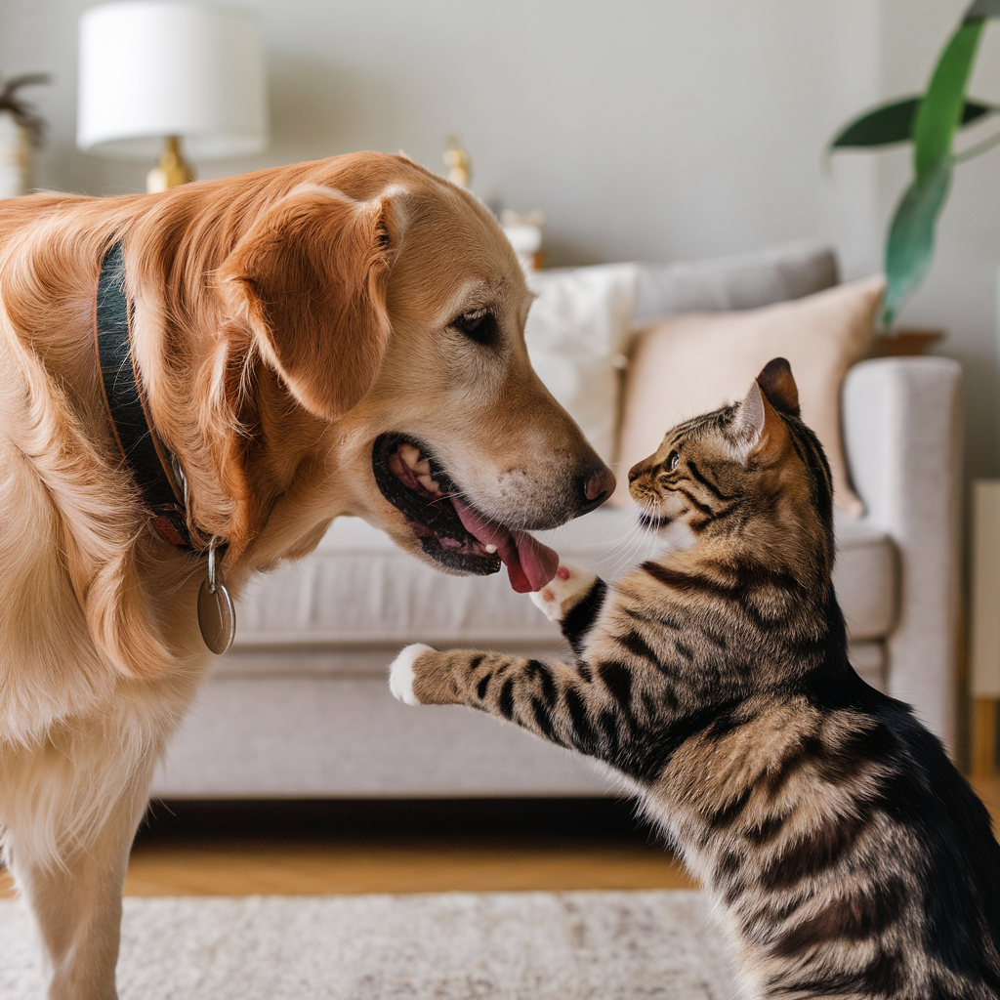

Adopciones
Sobre la Adopción
Adoptar una mascota es mucho más que llevar un animal a casa; es un acto de amor y responsabilidad que cambia vidas para siempre. Al abrir las puertas de tu hogar, le ofreces a un ser que lo necesita una segunda oportunidad para vivir rodeado de cariño, cuidado y seguridad. Cada adopción es un paso hacia un mundo más compasivo, donde los animales encuentran no solo un techo, sino también un lugar en tu corazón. ¡Únete a nuestra causa y sé parte de esta misión transformadora! Juntos podemos marcar la diferencia y ofrecerles un futuro lleno de esperanza.
Servicios Relacionados
- Asesoramiento en adopciones
- Visitas previas para conocer a las mascotas
- Soporte post-adopción
- Recomendaciones de cuidados y entrenamiento